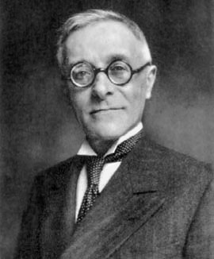
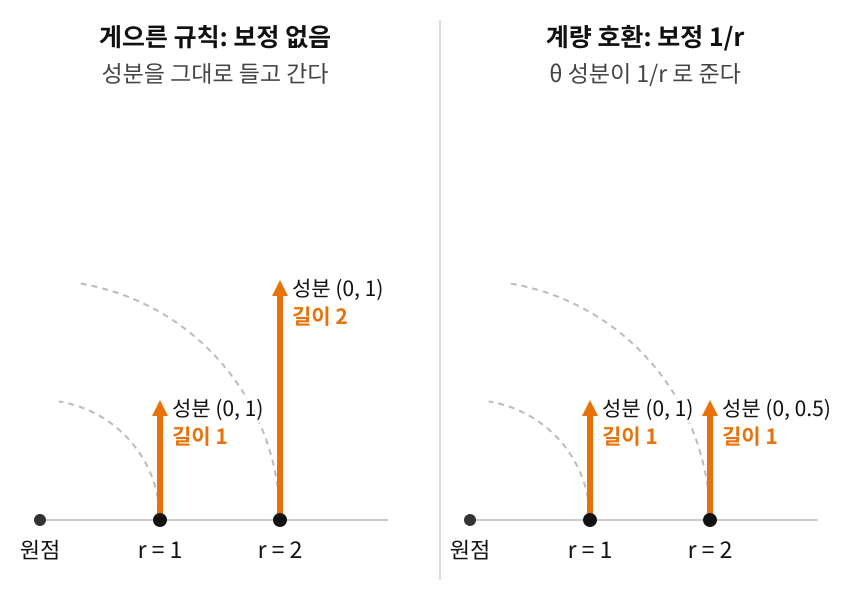

평면에서는 기저가 돈 몫을 직교좌표의 곧은 격자에 견줘 계산할 수 있었다. 곡면에는 그렇게 견줄 곧은 격자가 없어서, 화살표를 옮길 때마다 무엇을 "돌지 않은 것"으로 칠지 정해야 한다. 그런데 걱정이 하나 생긴다. 보정 항 Γ는 누가 정하는가? 다르게 고르면 다른 공변미분이 나오지 않는가? 실제로 그렇다. 이런 보정 규칙 하나하나를 접속이라 부른다. 접속은 서로 다른 점의 화살표를 비교하는 규칙이다. 두 점의 접선공간(그 점에서 곡면에 닿는 평면)은 서로 다른 방이라, 한 방의 화살표를 다른 방으로 옮기는 규칙이 있어야 비교할 수 있다. 규칙은 얼마든지 만들 수 있다.
역사: 툴리오 레비-치비타 (Tullio Levi-Civita, 1873–1941)

이탈리아 파도바 대학의 교수였던 레비-치비타는 스승 그레고리오 리치-쿠르바스트로와 함께 "텐서 해석학(calcolo tensoriale)"을 체계화한 인물이기도 하다. 아인슈타인은 일반상대성이론을 구축하면서 리치와 레비-치비타의 텐서 형식론에 크게 의존했고, 레비-치비타와 활발히 서신을 교환했다.
편지는 1915년 초, 레비-치비타가 아인슈타인의 중력 방정식 논문에서 텐서 계산이 어긋난 곳을 짚으면서 시작되었다. 둘은 이 문제를 두고 여러 달 편지를 주고받았고, 아인슈타인은 그 편지 가운데 하나에 이렇게 썼다. “당신의 계산법이 지닌 우아함에 감탄합니다. 참된 수학이라는 말을 타고 이 들판을 달리는 것은 멋진 일일 겁니다. 우리 같은 사람은 힘들게 걸어서 헤쳐 가야 하니까요.” 레비-치비타는 아인슈타인의 편지를 모두 간직했다.
파시스트 정권의 인종법으로 1938년 교수직에서 쫓겨난 레비-치비타는 고립 속에서 1941년 세상을 떠났다. 그러나 그가 놓은 다리 — 대수적 보정 항과 기하학적 평행이동(곡선을 따라 돌리지 않고 옮기기) 사이의 연결 — 는 미분기하학 전체의 기둥으로 남아 있다.
게으른 규칙과 두 조건
가장 게으른 규칙을 하나 골라 보자. 평면의 극좌표에서 Γ를 모두 0으로 두는 것이다. 그러면 화살표를 옮기는 동안 성분을 그대로 들고 가게 된다. 좌표 기저 ∂θ 하나, 곧 성분 (0,1)짜리 화살표를 r=1에서 r=2까지 바깥으로 옮겨 보자. 성분은 끝까지 (0,1)이다. 그런데 ∂θ의 길이는 그 자리 원의 반지름 r과 같다(각도 1만큼 돌 때 원 둘레를 따라 가는 거리). 그래서 r=1에서 길이 1이던 화살표가 r=2에서는 길이 2가 된다. 옮기기만 했는데 자(계량. 점마다 거리를 재는 눈금)로 잰 길이가 두 배가 되었다.
이것을 막는 것이 첫째 조건, 계량 호환이다. 옮기는 동안 자로 잰 길이와 각도가 변하지 않아야 한다는 조건으로, 식으로는 ∇g=0이다(계량 g를 어느 방향으로 보정된 미분을 해도 0, 곧 들고 다니는 자가 변하지 않는다). 공변미분 절에서 구한 보정 Γrθθ=1/r을 쓰면, 바깥으로 갈수록 θ 성분이 1/r로 줄어든다. r=2에서 성분 0.5 × 길이 2 = 1로 길이가 그대로다.

게으른 규칙과 계량 호환. 극좌표의 좌표 기저 ∂θ(성분 (0,1), r=1에서 길이 1)를 바깥으로 옮긴다. 왼쪽은 성분을 그대로 들고 가서 r=2에서 길이가 2가 되고, 오른쪽은 보정 Γrθθ=1/r을 써서 θ 성분이 0.5로 줄어 길이 1이 지켜진다
둘째 조건은 비틀림 없음이다. 두 방향으로 조금씩 번갈아 움직여 만든 아주 작은 평행사변형이 틈 없이 닫혀야 한다. 좌표로 쓰면 Γjki=Γkji, 아래 두 첨자를 바꿔도 값이 같다는 조건이다. 방금의 게으른 규칙은 이 조건은 지키고 첫째 조건을 어겼다.
아래 위젯은 비틀림 조건을 그림으로 보여 준다. 한 점에서 u만큼 간 뒤 v를 옮겨 와서 v만큼 가는 길과, 순서를 바꾼 길이 같은 곳에서 만나는가? 비틀림이 있는 접속에서는 두 끝점 사이에 틈 T(u,v)가 생기고, 그 틈은 평행사변형의 넓이에 비례한다. 레비-치비타 접속은 이 틈이 언제나 0이다.
리만 매니폴드 (M,g)는 계량 g가 주어진 매니폴드다. 매니폴드는 좁게 보면 평면처럼 좌표를 깔 수 있는 곡면·공간이다. 이런 공간에서 두 조건을 함께 지키는 접속은 단 하나뿐이고, 그 크리스토펠 기호는 계량으로부터 바로 계산된다.
계량은 자이고, 접속은 자를 들고 걸어다니는 방법이다. 자의 길이가 변하지 않고 걸음걸이에 비틀림이 없는 걷기 방법은 하나뿐이고, 위 공식이 그 방법을 자에서 바로 계산해 준다. 자를 정하면 미분 규칙이 저절로 따라온다.
레비-치비타 접속 (계량이 정하는 유일한 비교기 / Levi-Civita Connection, ∇) — 옮기는 동안 자로 잰 길이와 각도를 지키고(계량 호환), 작은 평행사변형이 닫히는(비틀림 없음) 단 하나의 접속. 리만 기하학의 "기본 접속"이며, 측지선(곡면 위의 곧은 길)·곡률(휘어진 정도) 등 거의 모든 후속 개념이 여기서 출발한다.
레비-치비타의 접속 개념은 후대에 "계량을 보존하면서 비틀림이 없는 유일한 접속"으로 정밀하게 특성화되었다. 오늘날 레비-치비타 접속이라 불리는 이 접속은, 리만 기하학에서 가장 자연스러운 미분 규칙의 위치를 차지한다.
따라 계산해 보기 — 극좌표의 크리스토펠 기호
극좌표 (r,θ)에서 평면의 계량은 ds2=dr2+r2dθ2, 곧 grr=1, gθθ=r2, grθ=0이다. 역행렬은 grr=1, gθθ=1/r2이다. 계량 성분 가운데 0이 아닌 미분은 ∂rgθθ=2r 하나뿐이므로, 위 공식의 괄호 안에서 살아남는 항도 이것뿐이다.
나머지 Γ(예: Γrrr, Γθθθ)는 모두 0이다. 공변미분 절에서 기저벡터를 직접 미분해 구한 값과 똑같다. 계량만 알면 그림 없이도 같은 보정이 나오는 것이다.
문제 4 — 픽셀 수를 그대로 보내면
확인 가로 300픽셀짜리 그림이 픽셀 하나의 폭이 0.2 mm인 노트북 화면에 떠 있다. (가) 화면 위 그림의 실제 폭은 몇 mm인가? (나) 이 그림을 픽셀 하나의 폭이 0.1 mm인 휴대폰에 픽셀 수 그대로 띄우면 실제 폭은? (다) 실제 폭을 그대로 두려면 휴대폰에서는 몇 픽셀로 그려야 하는가?
같이 풀기 세션 4
김민준
(가)는 300×0.2=60 mm요. (나)는 픽셀 수가 같으니까 그림도 그대로 60 mm죠.
선생님
휴대폰의 픽셀 300개를 자로 재면 몇 mm예요?
김민준
300×0.1=30 mm… 반으로 줄었네요. 숫자를 그대로 들고 왔는데 크기가 변했어요. (다)는 60÷0.1=600픽셀이요.
이서연
실제 폭은 픽셀 수 × 픽셀 하나의 폭이니까, 픽셀이 반으로 좁아지면 픽셀 수를 두 배로 늘려야 곱이 그대로지.
선생님
게으른 규칙에서는 어느 숫자가 픽셀 수였고, 어느 숫자가 픽셀 하나의 폭이었죠?
이서연
성분 1이 픽셀 수, ∂θ의 길이 r이 픽셀 하나의 폭이요. 그 폭이 두 배가 되었는데 성분을 그대로 두니까 길이가 두 배가 됐고요.
김민준
발표 자료를 노트북에서 만들고 강의실 프로젝터로 띄웠더니 그림이 엉뚱한 크기로 나왔던 게 이거였네요. 픽셀 수만 맞춰 놓고 픽셀 하나의 크기는 생각을 안 했어요.
문제 5 — 구면 좌표의 크리스토펠 기호
계산 반지름 1인 구면을 북극에서 잰 각도 θ와 경도 ϕ로 쓰면 계량은 ds2=dθ2+sin2θdϕ2이다. Γϕϕθ와 Γθϕϕ를 구하라.
같이 풀기 세션 5
김민준
sympy로 돌려 봤어요. Γϕϕθ=−2sinθcosθ가 나와요.
이서연
난 손으로 했는데 Γϕϕθ=−sinθcosθ야. 대신 Γθϕϕ=sinθcosθ가 나왔어.
선생님
한 개씩 다르네요. 검산할 거리가 하나 있어요. 민준 학생 코드에 극좌표 계량을 넣으면 Γθθr가 얼마로 나와요?
김민준
…−2r이요. 그런데 아까 그림으로 −r을 확인했잖아요. 아, 코드에 21을 안 넣었어요. 괄호 안 세 항만 더했네요.
김민준
답을 이미 아는 경우로 먼저 돌려 보라던 조교님 말이 이제 이해돼요. 테스트 없이 과제를 냈다가 결과가 전부 두 배로 나와서 감점당한 적이 있거든요.
선생님
이번엔 서연 학생 차례예요. Γθϕϕ는 ∂ϕ를 θ 방향으로 옮길 때 생기는 ∂ϕ 성분이에요. ∂ϕ의 길이는 얼마죠?
이서연
sinθ요. 그 위도선의 반지름이니까요.
선생님
북쪽이나 남쪽으로 조금 움직이면 그 길이는 얼마만큼의 비율로 변해요?
이서연
상대 변화율이니까 (sinθ)′/sinθ=cotθ요. 그러면 Γθϕϕ=cotθ여야 해요. 저는 공식의 역행렬 자리에 gθθ=1을 넣었어요. 위첨자가 ϕ니까 gϕϕ=1/sin2θ를 넣어야 했는데요.
선형대수 시간에 첨자 짝을 안 맞춘 채 행렬 곱을 전개했다가, 교수님이 "첨자는 문법이다"라고 하셨던 게 생각나. 위첨자가 ϕ면 gϕl의 첫 첨자도 ϕ여야지.
선생님
좋아요. 이 두 값은 구면 위에서 화살표를 옮길 때 바로 써요.
문제 6 — 길이는 지키는데 닫히지 않는 규칙
계산 평면의 직교좌표 (x,y)에 이런 옮기기 규칙을 준다. 동쪽(x 방향)으로 거리 s만큼 옮기는 동안 화살표를 시계 반대 방향으로 0.1s rad 돌리고, 북쪽(y 방향)으로 옮길 때는 돌리지 않는다. (가) 이 규칙은 첫째 조건(옮기는 동안 길이와 각도를 지킨다)을 지키는가? (나) 원점에서 동쪽으로 1 간 뒤, 거기까지 옮겨 온 “북쪽으로 1” 화살표를 따라 가는 길과, 북쪽으로 1 간 뒤 옮겨 온 “동쪽으로 1” 화살표를 따라 가는 길의 끝점은 얼마나 떨어져 있는가? 두 걸음을 모두 0.5로 줄이면?
같이 풀기 세션 6
이서연
(가)는 지켜요. 돌리기만 하고 늘이거나 줄이지 않으니까, 길이도 두 화살표 사이의 각도도 그대로예요.
김민준
(나)는 두 길 다 동쪽으로 1, 북쪽으로 1 가는 거니까 둘 다 (1,1)에서 만나요. 떨어진 거리는 0이요.
선생님
첫째 길을 한 걸음씩 따라가 볼까요. 동쪽으로 1 가는 동안, 들고 간 “북쪽으로 1” 화살표는 어떻게 됐죠?
김민준
0.1 rad 돌아서… (−sin0.1,cos0.1)=(−0.0998,0.995)요. 그걸 따라가면 끝점이 (0.900,0.995)예요. 둘째 길은 북쪽으로 갈 때 안 돌리니까 동쪽 화살표 그대로라 (1,1)이고요. 두 끝점이 약 0.1 떨어져 있네요.
이서연
걸음을 0.5로 줄이면 첫째 길 끝이 (0.475,0.499), 둘째가 (0.5,0.5)라 약 0.025. 걸음을 반으로 줄이니 틈은 4분의 1이야.
선생님
이 규칙은 첫째 조건은 지키고 평행사변형이 닫히지 않아요. 게으른 규칙과 거꾸로죠. 크리스토펠 기호로 보면 어디가 어긋났을까요? 동쪽으로 움직일 때, 옮긴 화살표에 견주면 좌표 기저 ∂y는 어떻게 보여요?
이서연
옮긴 화살표는 시계 반대 방향으로 도는데 ∂y는 그대로니까, 옮긴 화살표에 견주면 ∂y가 거꾸로 시계 방향, 곧 동쪽으로 0.1씩 기울어요. 그래서 Γxyx=0.1. 북쪽으로 움직일 때는 아무것도 안 돌리니까 Γyxx=0이에요. 아래 두 첨자를 바꿨더니 값이 달라요.
김민준
두 조건 가운데 하나만 지키는 규칙이 둘 다 있네요. 그럼 둘 다 지키는 규칙은 왜 딱 하나예요?
선생님
세어 봅시다. 2차원에서 Γjki는 몇 개예요?
김민준
첨자 셋이 각각 두 가지니까 8개요.
이서연
둘째 조건으로 아래 두 첨자를 바꿔도 같아야 하니까, 아래 짝은 (1,1),(1,2),(2,2) 세 가지라 2×3=6개가 남아요. 첫째 조건은 계량 성분 셋(g11,g12,g22)을 두 방향으로 미분한 값마다 식 하나라서 3×2=6개. 모르는 수 6개에 식 6개예요.
선생님
그래요. 개수가 맞아떨어지고, 실제로 풀어 보면 답이 하나로 나와요. 그 답을 적어 둔 것이 위의 공식이에요.
이서연
선형대수 시간에 미지수 여섯에 식 여섯이면 해가 하나일 수 있다고 배웠는데, 여기서는 그 해가 곧 규칙 하나였네.